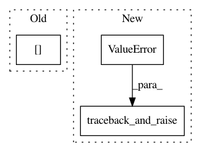

79a0ad30370338b1bebae9d3fdd8e7d0774c602b,src/syft/federated/fl_job.py,FLJob,_init_cycle,#FLJob#Any#,50
Before Change
// Load protocols
for protocol_name, protocol_id in cycle_params["protocols"].items():
self.protocols[protocol_name] = self.grid_worker.get_protocol(
worker_id, request_key, protocol_id
)
After Change
self.worker_id, request_key, cycle_params["model_id"]
)
if not self.model:
traceback_and_raise(
ValueError(f"Model is not valid so {self} can"t run")
)
except Exception as e:
traceback_and_raise(
ValueError(f"Failed to fetch model during {self}._init_cycle. {e}")
)
In pattern: SUPERPATTERN
Frequency: 3
Non-data size: 3
Instances
Project Name: OpenMined/PySyft
Commit Name: 79a0ad30370338b1bebae9d3fdd8e7d0774c602b
Time: 2021-03-25
Author: me@madhavajay.com
File Name: src/syft/federated/fl_job.py
Class Name: FLJob
Method Name: _init_cycle
Project Name: OpenMined/PySyft
Commit Name: 55cece34158493025b98ab8d75d5a85943d858b6
Time: 2021-02-08
Author: tudorcebere@gmail.com
File Name: src/syft/core/node/common/action/run_class_method_action.py
Class Name: RunClassMethodAction
Method Name: execute_action
Project Name: OpenMined/PySyft
Commit Name: bd80dea0c69bd2d7b86426b26b4b68e494c1bd72
Time: 2021-02-02
Author: tudorcebere@gmail.com
File Name: src/syft/ast/enum.py
Class Name: EnumAttribute
Method Name: solve_get_enum_attribute